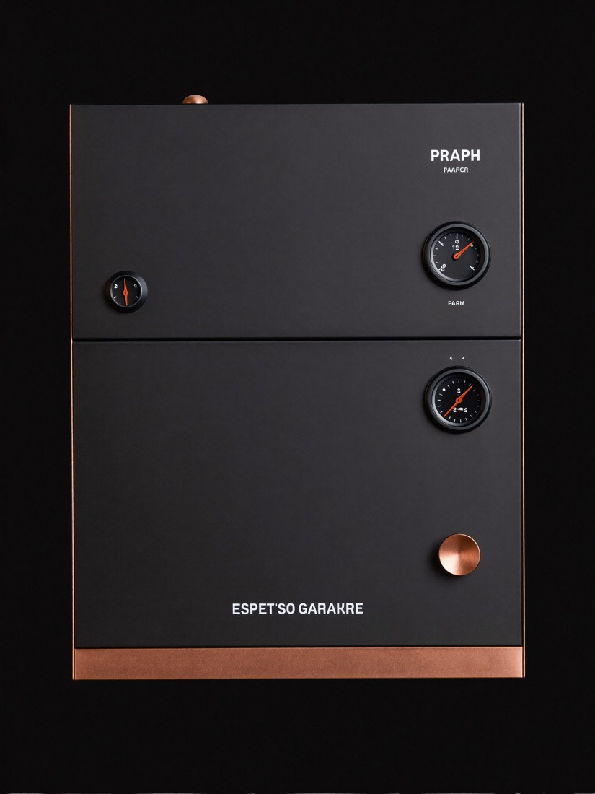
MK-01
Home
A single-boiler machine for the barista who measures the water and weighs the beans. Small footprint, serious about temperature.
- Boiler
- single · 1.6 L
- Pressure
- 9 bar
- PID
- ±0.5 °C
- Footprint
- 24 cm
$1,450
Reserve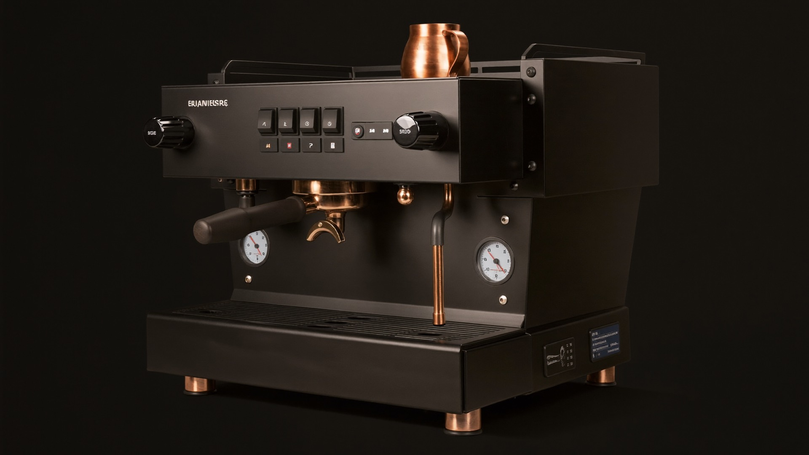
Precision espresso equipment
Home and professional machines tuned to the tenth of a gram and the tenth of a degree — so every shot lands the same way the last one did.
Choose your method
The same nine bars behind the group head will pull a ristretto, feather a pour-over, or steep overnight. Pick a method — the recipe rolls into place.
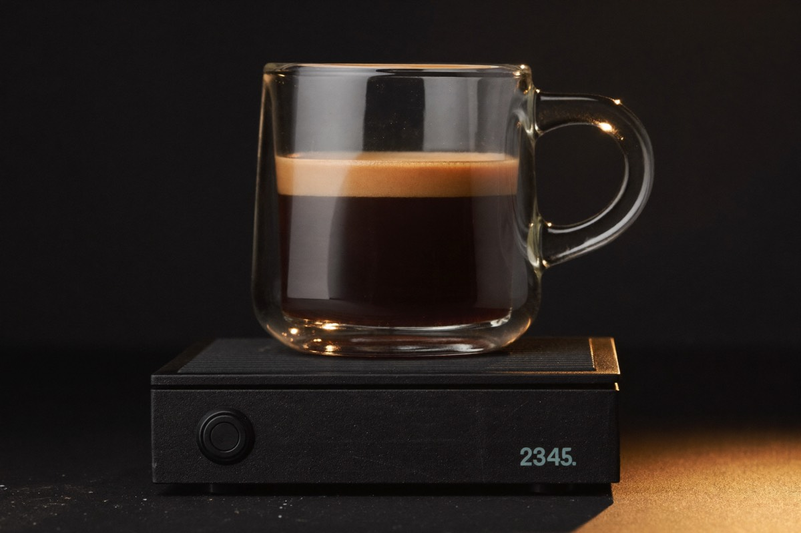
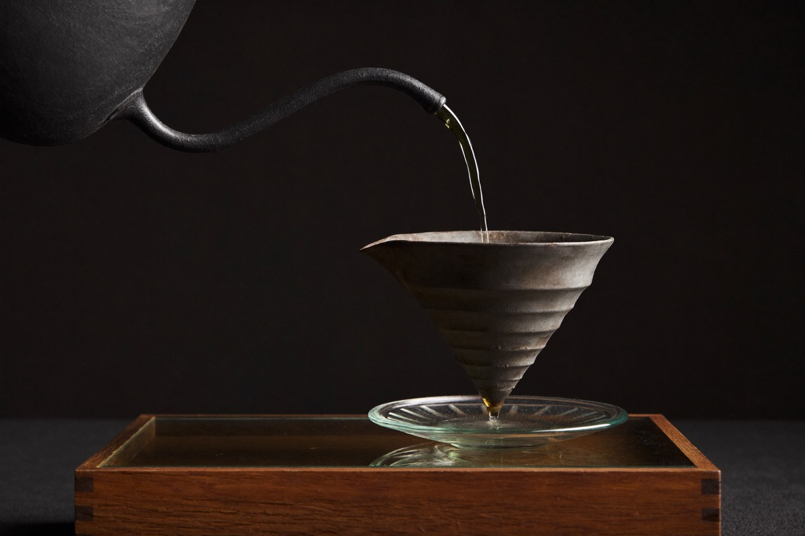
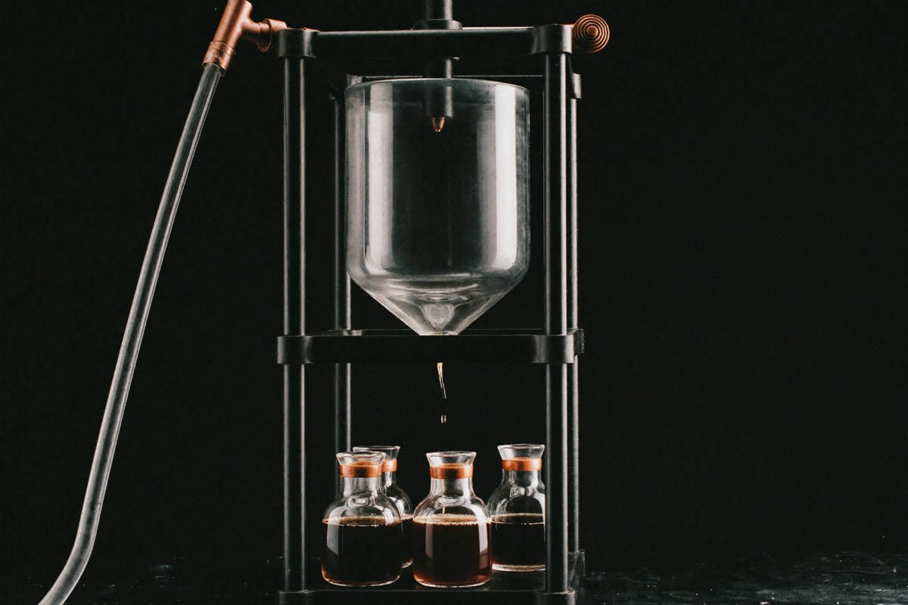
How it’s made
Nothing here is left to feel. Each step is measured, logged, and repeatable — which is the only way the last step tastes like it should.
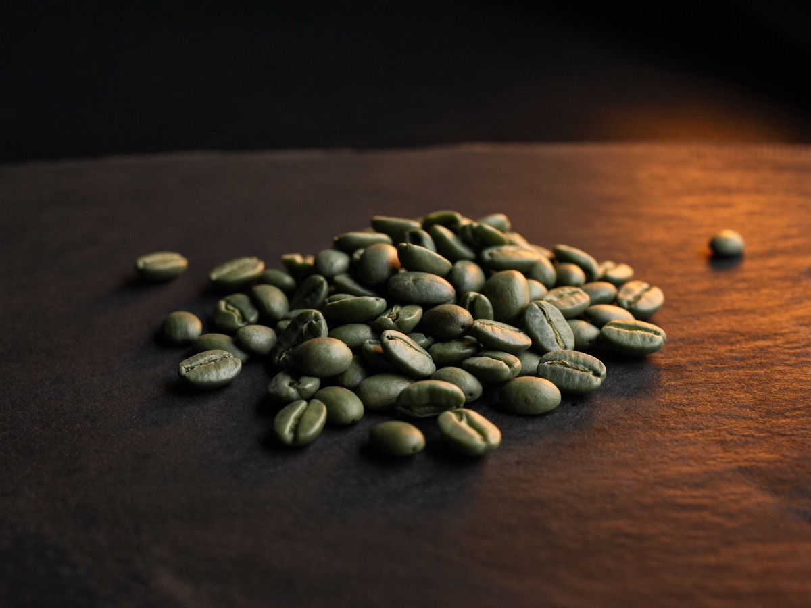
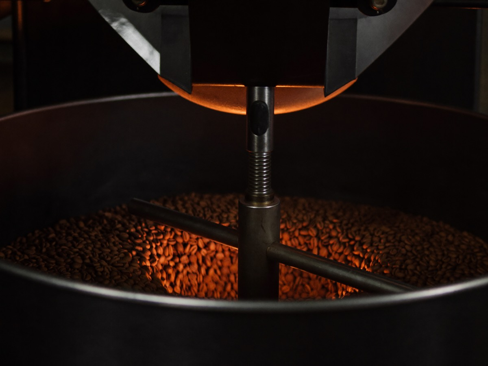
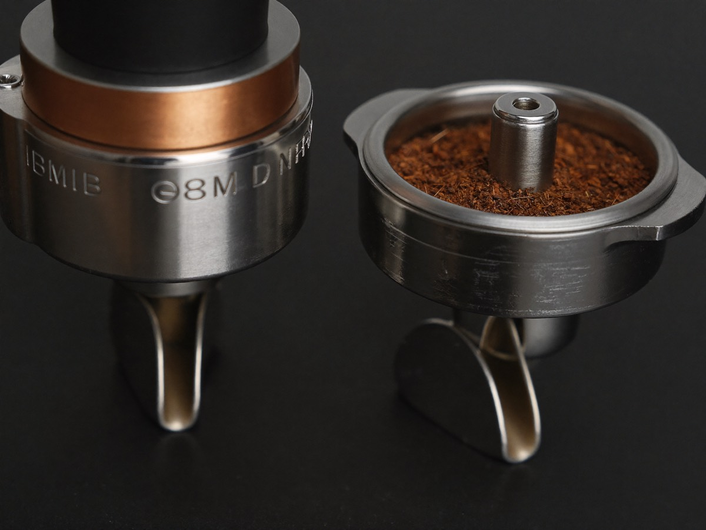
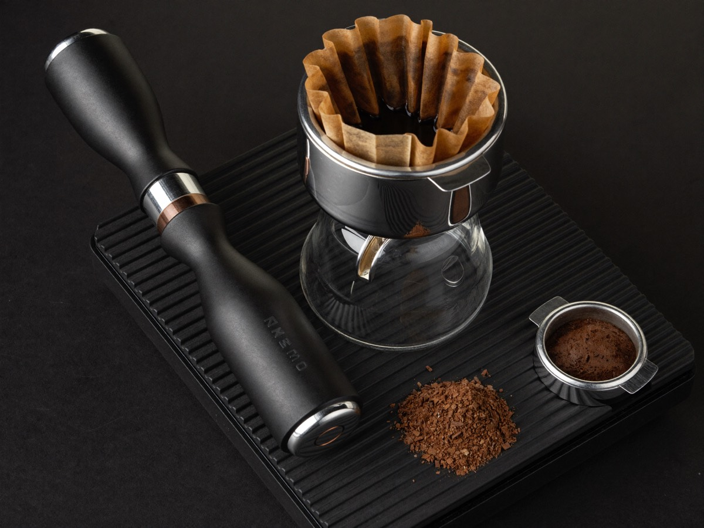
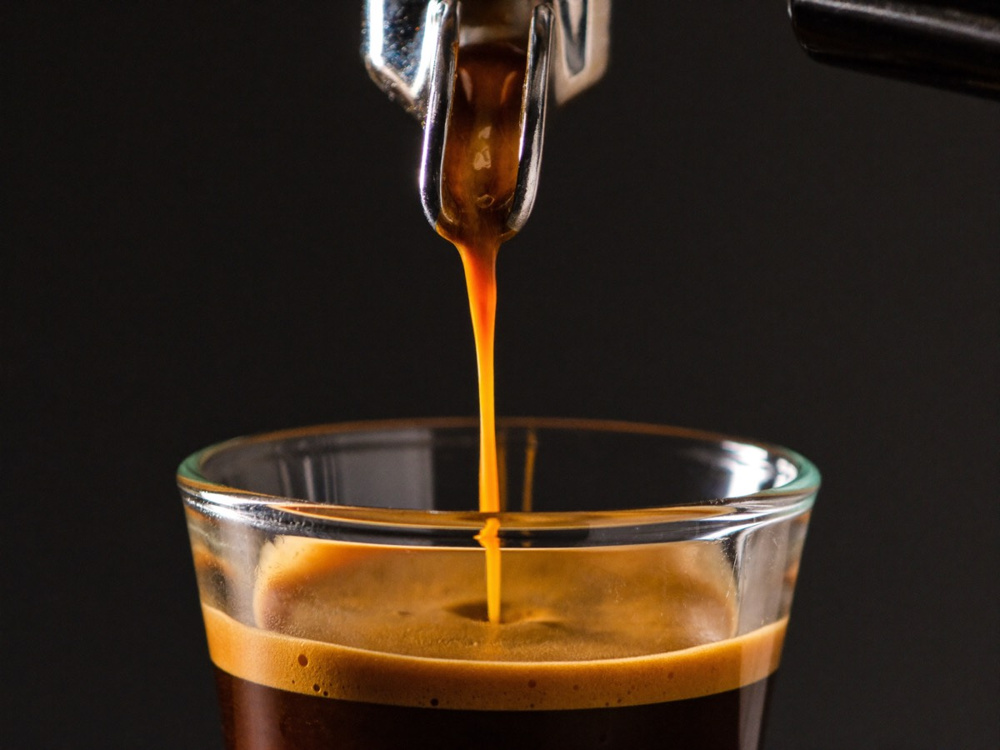
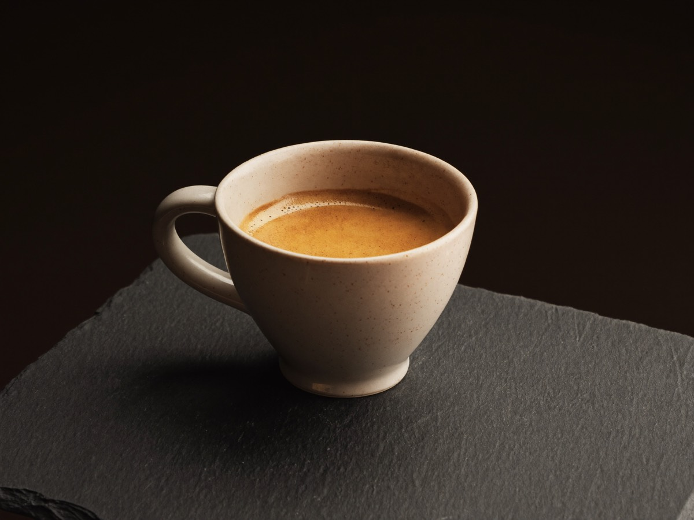
Step 01 — Bean · single-origin lots, graded and hand-sorted.
Three machines
Every machine holds nine bars. What changes is how much coffee you can ask of it before it needs a breath — from one kitchen counter to a full service bar.

MK-01
A single-boiler machine for the barista who measures the water and weighs the beans. Small footprint, serious about temperature.
$1,450
Reserve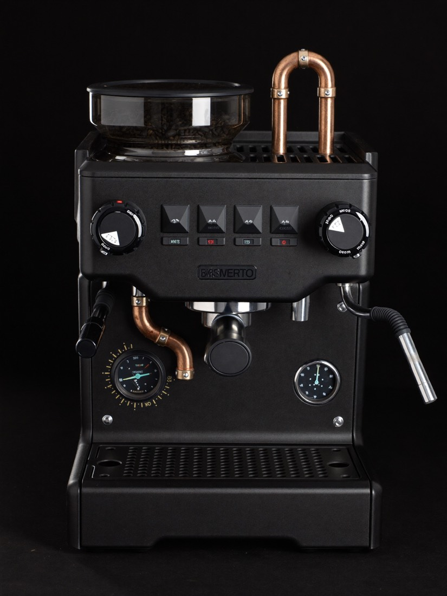
MK-02
Dual boiler and a saturated group — steam and extraction hold their own line, so back-to-back shots taste like the first.
$3,900
Reserve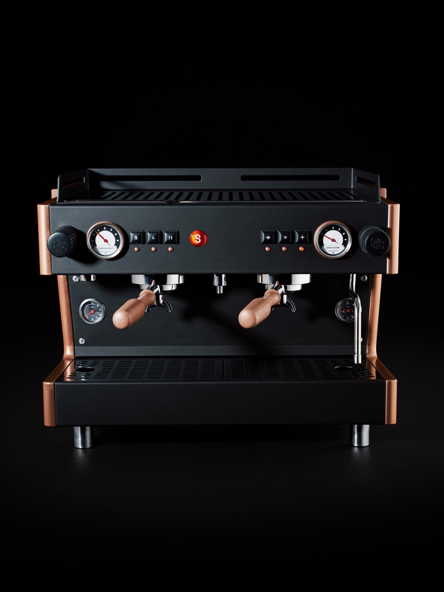
MK-03
Three groups, plumbed and volumetric, built to run a rush without flinching. For the bar that never really closes.
$11,200
ReserveKeep it running
Included
Lifetime firmware and the full maintenance guides. Every machine ships with it.
$12/mo
Wear parts and gaskets covered, with priority turnaround at the bench.
$49/mo
An on-site technician on call — for commercial bars that can’t go dark.